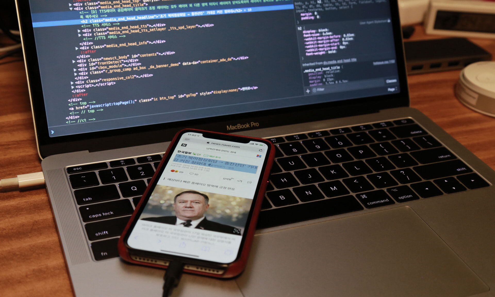
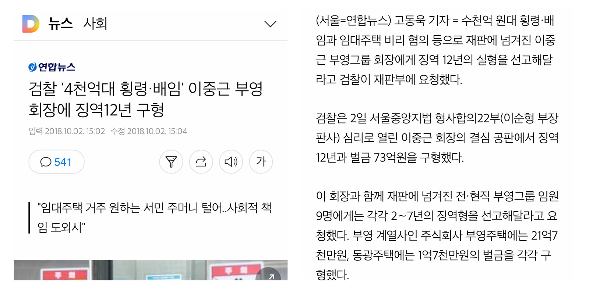
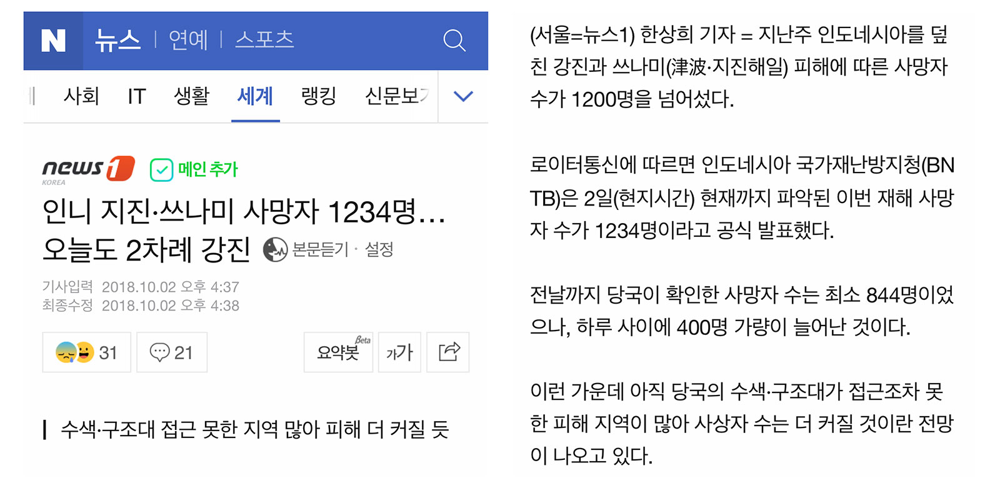
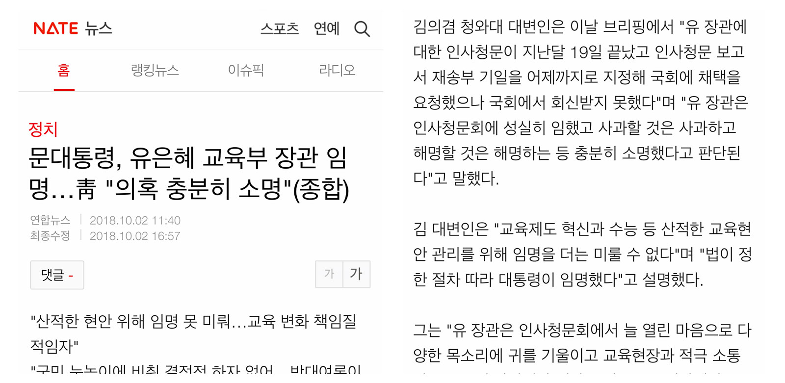
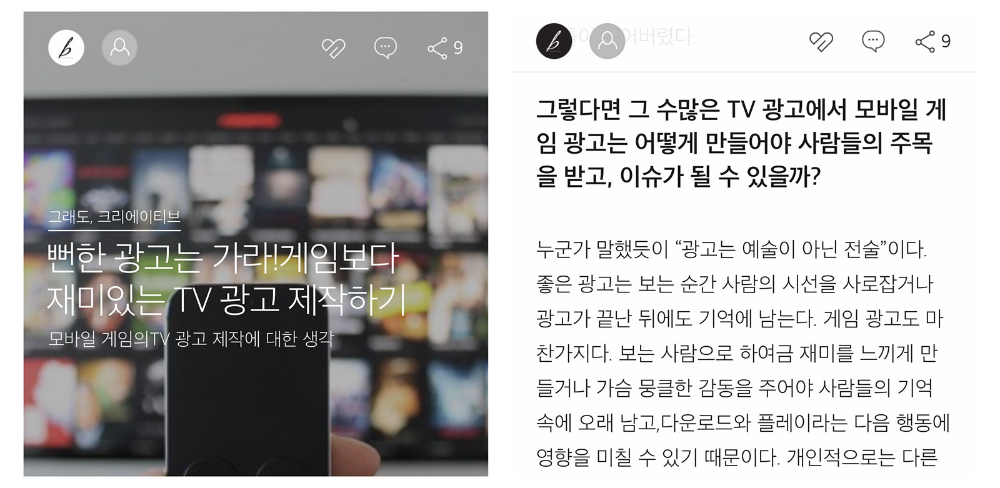
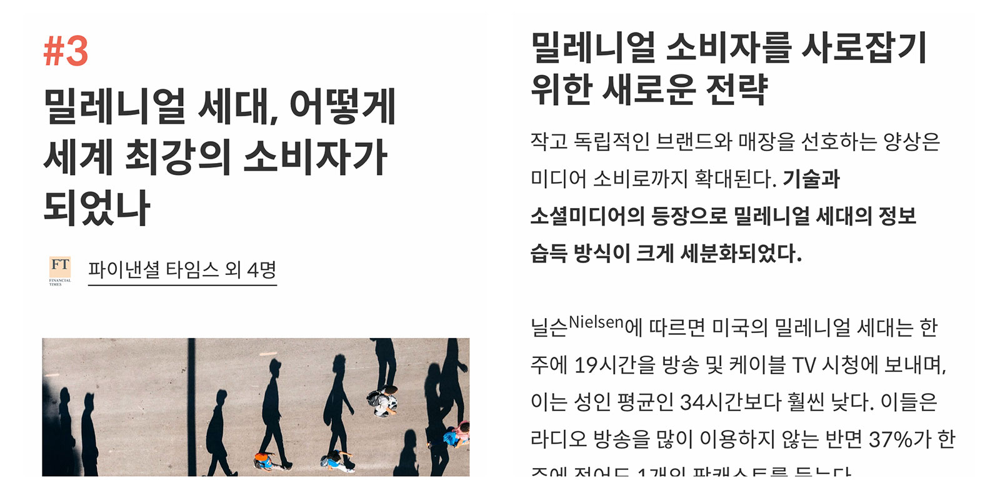
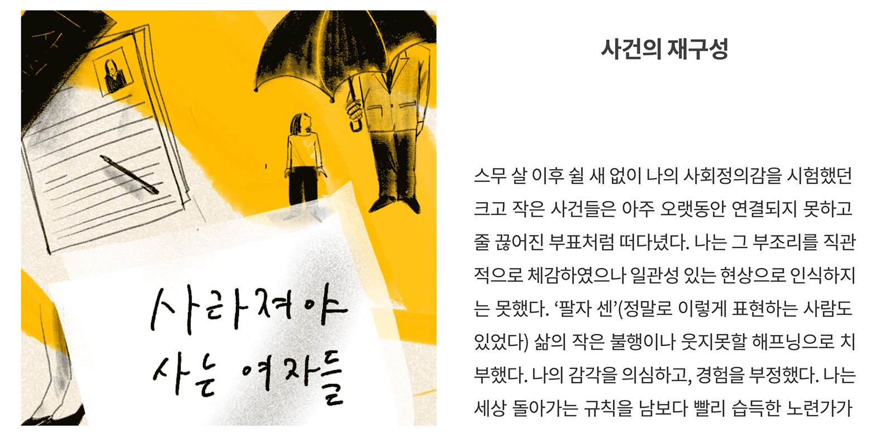
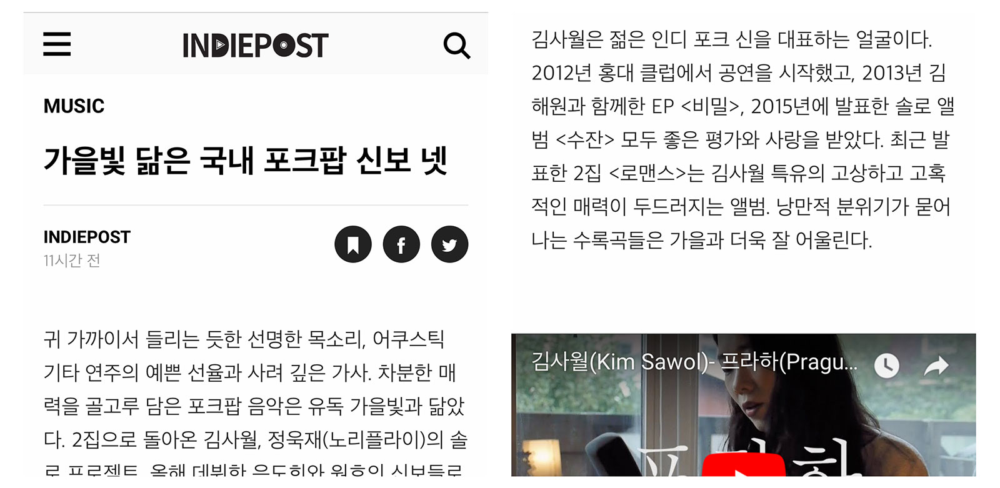

지난 글에서는 한글이 주로 사용되는 웹 사이트들을 데스크탑 기기(이하 일반)에서 봤을 때 어떻게 표현하는지 정리했었다. 이번에는 모바일 기기에서 해당 웹 사이트들을 접속했을 때 어떻게 한글 서식을 지정하는지 알아보았다. CSS에서 주석에 적힌 값이 실제 CSS로 지정한 값이며, 별도의 표시가 없는 경우 계산된 값과 지정된 값이 같음을 의미한다.
이번에는 본문 뿐 아니라 제목에 적용된 CSS도 함께 찾아봤다. 화면은 iPhone X 기본 웹 브라우저인 Safari에서 직접 캡춰하였으며 정사각형으로 화면을 잘라 왼쪽엔 제목 영역, 오른쪽에는 본문 영역으로 매치하였다. CSS 값은 크롬의 디바이스 모드를 통한 휴대기기 시뮬레이션과 iPhone을 macOS Safari의 Web Inspector와 연결해 이중으로 확인하였다. 일반 페이지에서와 다른 부분을 강조하여 정리해보았다.

다음 뉴스 모바일 – https://m.media.daum.net

일반 페이지에서는 AppleSDGothicNeo-Regular를 최우선 서체로 사용했던 것과는 다르게, AppleSDGothicNeo-Light를 제목과 본문에 모두 사용하고 있다. 일반 페이지에서 문자열 색상으로 #333을 사용했지만, 모바일에서는 제목과 본문 색상을 완전한 검정인 #000로 쓰고 있다.
/* 제목 */
{
color : #000;
font-family : AppleSDGothicNeo-Light, 'HelveticaNeue', 'Malgun Gothic', '맑은 고딕', sans-serif;
font-size : 23px;
font-weight : normal;
letter-spacing : -1px;
line-height : 29px;
}
/* 본문 */
{
color : #000;
font-family : AppleSDGothicNeo-Light, 'HelveticaNeue', 'Malgun Gothic', '맑은 고딕', sans-serif;
font-size : 17px;
letter-spacing : -0.34px; /* -0.02em */
line-height : 27.625px; /* 1.625 */
word-break : break-all;
word-wrap : break-word;
}
네이버 뉴스 모바일 – https://m.news.naver.com/

다음이 일반 페이지보다 모바일 페이지에서 더 가는 서체와 진한 색을 쓴 것과는 달리, 네이버는 모바일에서 같은 종류의 서체에 일반 페이지의 #000 보다 조금 더 밝은 색상인 #141414를 사용한다. 일반 페이지에서는 맑은 고딕 계열을 후순위로 두었지만, 모바일에서는 지원 가능성이 낮으니 후보에서 제외한 것으로 보인다.
/* 제목 */
{
color : #141414;
font-family : HelveticaNeue, AppleSDGothicNeo-Regular, sans-serif;
font-size : 24px;
font-weight : normal;
letter-spacing : -0.3px;
line-height : 31px;
}
/* 본문 */
{
color : #141414;
font-family : HelveticaNeue, AppleSDGothicNeo-Regular, sans-serif;
font-size : 17px;
letter-spacing : -0.3px;
line-height : 26.52px; /* 1.56 */
word-break : break-all;
word-wrap : break-word;
}
네이트 뉴스 – http://news.nate.com/

일반 페이지에서 최근의 흐름과는 다르게 예전에 만들어진 것 같은 스타일을 사용하던 네이트도, 모바일 페이지에서는 Apple SD Gothic Neo를 별도 지정하고 적당한 서체 크기를 사용하는 등 최소한의 조치를 하였다. 특이한 것은 브라우저 정보에 따라 body 태그에 android 또는 safari, ip6 등의 클래스를 추가로 지정하는데, 특별히 .safari * 클래스들에 대해 font-weight: 300을 지정하여 보다 가늘게 표기되도록 한 점이다.
<!-- Pixel 2 XL로 에뮬레이션 한 경우 -->
<body class="view_pg android" id="body" data-gr-c-s-loaded="true">
<!-- iPhone X로 에뮬레이션 한 경우 -->
<body class="view_pg safari ip6" id="body" data-gr-c-s-loaded="true">
/* 제목 */
{
color : #000;
font-family : "Helvetica Neue", "Apple SD Gothic Neo";
font-size : 26px;
font-weight : 400;
line-height : 32px;
word-wrap : break-word;
}
/* 본문 */
{
color : #222;
font-family : "Helvetica Neue", "Apple SD Gothic Neo";
font-size : 17px;
font-weight : 400;
line-height : 26.35px; /* 1.55em */;
word-wrap : break-word;
}
/* 사파리 한정 */
.safari * {
font-weight : 300;
}
브런치 – https://brunch.co.kr

일반 페이지에서 Noto Sans Light 서체를 지정하여 지나치게 가는 글자가 출력되도록 한 브런치는 모바일에서도 본문에 Apple SD Gothic Neo UltraLight를 사용하고 있다. 게다가 서체가 없는 경우를 대비해 font-weight: 100을 지정하고 있는데, 그나마 레티나 디스플레이에서의 해당 서체가 그럭저럭 읽을만 하여 일반 페이지에서보다는 괜찮은 결과를 보여주고 있다. 모바일 페이지에서도 user-select: none을 통해 문자열 선택을 방지하고 있는데, 이 조치가 얼마나 효과적인지는 궁금하다.
/* 제목 */
{
color : #fff;
font-family : applesdgothicneo-ultralight;
font-size : 24px; /* 18pt */
font-weight : 100;
letter-spacing : -1px;
line-height : 24px; /* 18pt */
white-space : normal;
}
/* 본문 */
{
color : #1b1b1b;
font-family : applesdgothicneo-ultralight!important;
font-size : 17.333333px; /* 13pt!important */
font-weight : 100!important;
line-height : 28px; /* 21pt!important */
user-select : none;
word-break : break-all;
}
퍼블리 – https://publy.co/

일반 페이지에서 Noto Sans를 사용했던 퍼블리는 모바일에서는 유사 서체인 Spoqa Han Sans를 사용하고 있다. 다른 사이트들이 모바일 페이지에서의 제목에 대해 font-weight: 400 이하를 고집했던 것과 달리 퍼블리는 일반적인 700을 지정하고 있다. 본문 서체의 크기는 일반 페이지의 18px 보다는 작은 17px로 다른 사이트들과 유사하다. 모바일 페이지의 본문에서 word-break: keep-all을 사용하고 있는 부분은 일반 페이지와 동일하다.
/* 제목 */
{
color : #333;
font-family : Spoqa Han Sans, Spoqa Han Sans JP, "Sans-serif";
font-size : 32px; /* 2rem!important */
font-weight : 700;
letter-spacing : 0;
line-height : 41.6px; /* 1.3!important */
overflow-wrap : break-word;
word-break : keep-all;
word-wrap : break-word;
}
/* 본문 */
{
color : #333;
font-family : Spoqa Han Sans;
font-size : 17px;
font-weight : 400;
line-height : 30.6px; /* 1.8 */
word-break : keep-all;
word-wrap : break-word;
}
핀치 – https://thepin.ch/

핀치는 모바일 페이지를 위한 별도의 스타일 지정이 없다. 딱 하나 모바일 페이지의 스타일이 letter-spacing: -0.7px 로 표시되어 찾아보니, 일반 페이지에서도 같은 값으로 변경되어 있다. 지난 번 글을 적은 이후로 바뀐 것으로 보인다.
/* 제목: 콘텐츠마다 별도 이미지나 애니메이션으로 표현된다. */
/* 본문 */
{
color : #313233;
font-family : "Noto Sans", "Apple SD Gothic Neo", "Malgun Gothic", Dotum;
font-size : 17px;
letter-spacing : -0.7px; /* ??? */
line-height : 30.6px; /* 1.8em */
text-align : justify;
text-rendering : optimizeLegibility;
}
인디포스트 – https://www.indiepost.co.kr/
 본문의 글이 너무 가늘어 읽기 어려웠던 인디포스트는 모바일 페이지를 위한 별도 스타일이 없었지만, 브런치와 마찬가지로 모바일 기기에서는 그럭저럭 읽을 수 있도록 표시된다. 의문의 그림자 처리도 그대로 유지된다.
/* 제목 */
{
color : #000;
font-family : 'Apple SD Gothic Neo', 'Droid Sans', 'Spoqa Han Sans', Arial, sans-serif;
font-size : 35.2px; /* 2.2rem */
font-weight : 700;
line-height : 50.2857px; /* 1.42857143 (Bootstrap) */
text-rendering : optimizeLegibility;
text-shadow : 1px 1px 1px rgba(0,0,0,0.005);
word-break : keep-all;
-webkit-font-smoothing: antialiased;
}
/* 본문 */
{
color : #222;
font-family : 'Apple SD Gothic Neo', 'Droid Sans', 'Spoqa Han Sans', Arial, sans-serif;
font-size : 16px; /* 1rem */
font-weight : 300;
line-height : 30.4px; /* 1.9rem */
text-rendering : optimizeLegibility;
text-shadow : 1px 1px 1px rgba(0,0,0,0.005);
word-break : keep-all;
-webkit-font-smoothing: antialiased;
}
미디엄(Medium) – https://medium.com/
 미디엄은 일반 페이지와 모바일 페이지 사이에 서체 크기가 다른 것이 가장 다른 점이다. 본문 서체로
미디엄은 일반 페이지와 모바일 페이지 사이에 서체 크기가 다른 것이 가장 다른 점이다. 본문 서체로 21px를 썼던 것과 달리 미디어 쿼리를 통해 iPhone X에서는 18px로 서체의 크기를 줄였다. 이외에도 letter-spacing 이 -0.003em 에서 -0.004em으로 아주 살짝 커진 것을 알 수 있다.
/* 제목 */
{
color : rgba(0,0,0,.84);
font-family : medium-content-sans-serif-font, "Lucida Grande", "Lucida Sans Unicode", "Lucida Sans", Geneva, Arial, sans-serif;
font-size : 30px;
font-style : normal;
font-weight : 600;
letter-spacing : -0.45px; /* -.015em */
line-height : 34.5px; /* 1.15 */
word-break : break-word;
word-wrap : break-word;
--baseline-multiplier: 0.22;
--x-height-multiplier: 0.342;
-webkit-font-smoothing: antialiased;
}
/* 본문 */
{
color : rgba(0,0,0,.84);
font-family : medium-content-serif-font, Georgia, Cambria, "Times New Roman", Times, serif;
font-size : 18px;
font-style : normal;
font-weight : 400;
letter-spacing : -0.072px; /* -.004em */
line-height : 28.44px; /* 1.58 */
text-rendering : optimizeLegibility;
word-break : break-word;
word-wrap : break-word;
--baseline-multiplier: 0.17;
--x-height-multiplier: 0.375;
-webkit-font-smoothing: antialiased;
}
각 사이트의 본문과 제목 서체 크기와 비율은 다음과 같다
| 사이트 | 본문(px) | 제목(px) | 비율 |
|---|---|---|---|
| 다음 뉴스 | 17 | 23 | 1.35 |
| 네이버 뉴스 | 17 | 24 | 1.41 |
| 네이트 뉴스 | 17 | 26 | 1.53 |
| 브런치 | 17.3 | 24 | 1.38 |
| 퍼블리 | 17 | 32 | 1.88 |
| 인디포스트 | 16 | 35.2 | 2.2 |
| 미디엄 | 18 | 30 | 1.67 |
각 사이트의 본문 서체 크기와 line-height 값의 비율은 다음과 같다
| 사이트 | font-size(px) | line-height(px) | 비율 |
|---|---|---|---|
| 다음 뉴스 | 17 | 27.625 | 1.625 |
| 네이버 뉴스 | 17 | 26.52 | 1.56 |
| 네이트 뉴스 | 17 | 26.35 | 1.55 |
| 브런치 | 17.3 | 28 | 1.618 |
| 퍼블리 | 17 | 30.6 | 1.8 |
| 핀치 | 17 | 30.6 | 1.8 |
| 인디포스트 | 16 | 30.4 | 1.9 |
| 미디엄 | 18 | 28.44 | 1.58 |